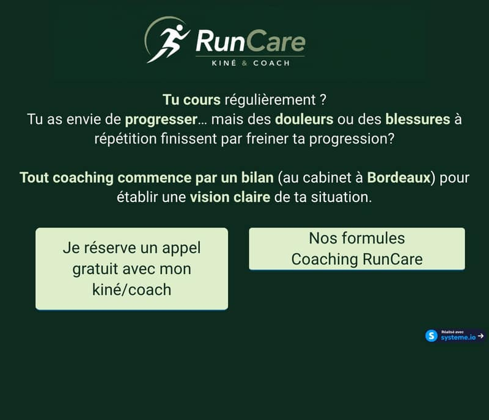
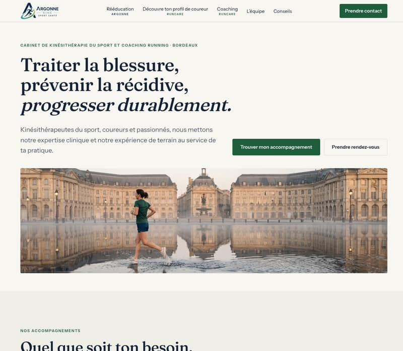
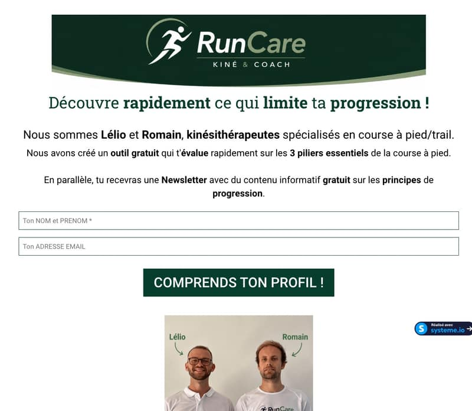
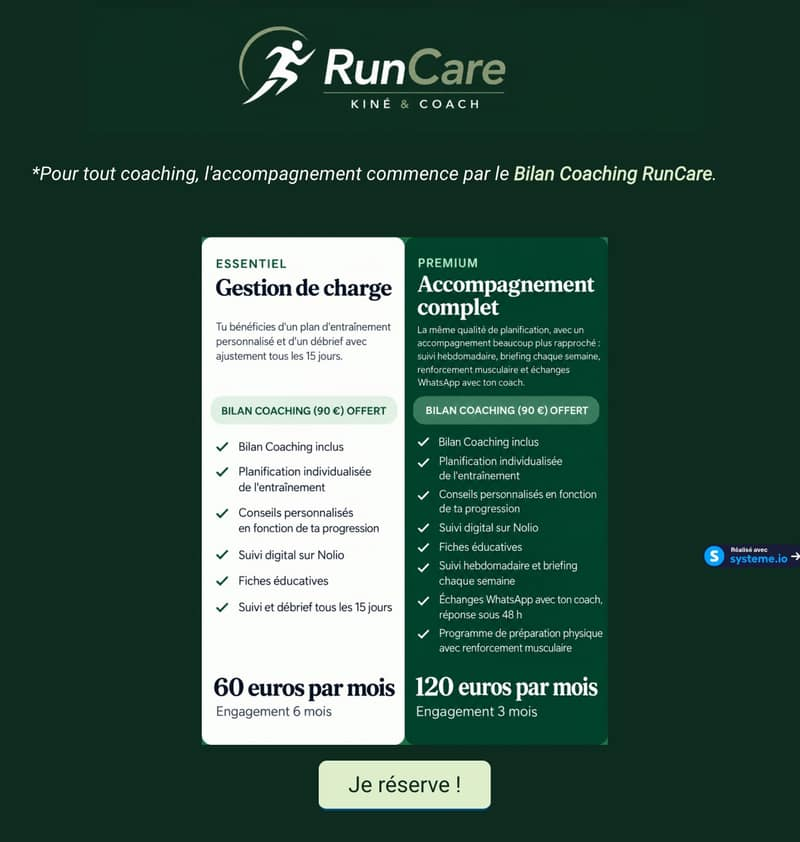

RunCare · pages systeme.io
Une seule identité, du site au tunnel.
Les pages systeme.io (test, page de vente du bilan, formules) doivent ressembler au site argonnekinesportsante.fr. Tout ce qui suit se règle dans l'éditeur systeme.io, sans code. Les valeurs sont à recopier telles quelles.
1. Le constat
Le site et le tunnel ne racontent pas la même marque. Le tunnel est entièrement vert sombre avec du texte vert pâle, en Roboto, avec des boutons de 36 à 45 px et cinq libellés différents pour le même lien. Le site est clair, calme, avec un seul vert pour les boutons et une typographie à deux polices.
Ce qui donne au tunnel actuel son côté « ça rentre dedans », c'est le fond sombre et la taille. Mais un fond sombre partout n'attire plus l'œil nulle part, et un bouton vert pâle sur vert sombre est le moins contrasté de la page. Un tunnel efficace guide : une promesse en haut, un bouton visible sans défiler, répété après chaque argument, bien contrasté, avec une phrase de réassurance à côté.


La maquette de la page de vente montre le résultat visé avec vos textes actuels, sans en changer un mot.
2. Par où commencer
Trois niveaux. Le premier fait 80 % de l'effet en une heure de réglages. Cochez au fur et à mesure, la page s'en souvient sur votre appareil.
3. Couleurs
Sept valeurs, pas une de plus. À saisir dans les sélecteurs de couleur de l'éditeur (fond de section, couleur de texte, fond de bouton).
Règles
- Texte sombre sur fond clair presque partout. Texte clair
#F7F6F1seulement sur les bandes bleu marine. - Le vert sert à ce qu'on doit cliquer ou repérer. S'il est partout, il ne signale plus rien.
- Sur une bande sombre, le bouton reste vert
#1F5E3Aavec texte blanc. Les surtitres y passent en vert clair#9FC4A8. - Bordures et filets :
#DCDAD1, 1 px.
#0D2B1E en fond de page, le vert pâle #DEEECB en couleur de texte et de bouton, le vert #073D2C de la page du test. Trois verts différents pour une seule marque, et aucun n'est celui du site.4. Polices et tailles
Deux polices, disponibles dans Google Fonts, donc dans la liste de l'éditeur. Fraunces pour les titres, un serif avec du caractère, c'est la signature du site. Instrument Sans pour tout le reste. Si l'éditeur ne les propose pas : Lora et Inter, qui s'en rapprochent.
Fraunces lisible : trois réglages
Sur le site, Fraunces est utilisée dans sa version la plus contrastée, celle des très grands titres d'affiche : pleins épais, déliés très fins. C'est élégant en grand, moins lisible en petit ou sur fond sombre. Pour le tunnel, on reste dans la même police mais on change de variante, ce qu'une charte autorise.
- Graisse 600 (semi-gras) au lieu de 500. Dans l'éditeur : choisir « 600 » ou « Semi Bold » dans la graisse du texte. Les déliés s'épaississent, le titre tient sur téléphone.
- Taille optique automatique. Fraunces s'adapte toute seule à la taille affichée : plus solide à 36 px, plus fine à 88 px. C'est le comportement par défaut dans systeme.io, rien à régler. Le spécimen ci-dessous montre la différence avec la version « affiche » du site.
- Pas d'italique fantaisie. Le site utilise un italique très dessiné sur un mot clé. Dans le tunnel, l'italique reste standard, ou on s'en passe.
Si, après essai, les titres restent difficiles à lire pour vous, le repli acceptable est de garder Fraunces pour le titre de page et le prix seulement, et de passer les titres de section en Instrument Sans gras. Pas d'autre police.
Titre de page · Fraunces 600, taille optique automatique · 52 px (mobile 36)
Tu cours régulièrement, tu veux progresser ?
Pour comparaison : la version « affiche » du site, Fraunces 500, déliés fins
Tu cours régulièrement, tu veux progresser ?
Titre de section · Fraunces 600 · 36 px (mobile 28)
Pourquoi ça n'a pas marché ?
Sous-titre · Instrument Sans 700 · 23 px (mobile 21)
1. Une analyse de ton profil
Texte courant · Instrument Sans 400 · 20 px (mobile 18) · interligne 1,6 · 60 caractères par ligne au plus
Nous croisons l'ensemble de ces informations afin d'identifier les facteurs qui limitent réellement ta progression.
Surtitre · Instrument Sans 700 · 13 px · capitales · espacement 0,14 em · vert
Qu'est-ce que ce bilan ?
| Rôle | Police | Graisse | Ordinateur | Mobile |
|---|---|---|---|---|
| Titre de page (un seul par page) | Fraunces | 600 | 52 px | 36 px |
| Titre de section | Fraunces | 600 | 36 px | 28 px |
| Sous-titre, nom d'étape, question de FAQ | Instrument Sans | 700 | 23 px | 21 px |
| Texte courant | Instrument Sans | 400 | 20 px | 18 px |
| Réassurance sous un bouton | Instrument Sans | 400 | 17 px | 16 px |
| Bouton | Instrument Sans | 700 | 19 px | 19 px |
| Surtitre, légende | Instrument Sans | 700 | 14 px | 14 px |
| Prix mis en avant | Fraunces | 600 | 96 px | 72 px |
Sur l'envie de tout faire très gros
Dans un tunnel, ce qui doit être gros, c'est la promesse et le bouton. Si tout est gros, plus rien ne l'est. Aujourd'hui les titres de section font 44 à 50 px, les boutons 36 à 45 px, et le texte courant est en Roboto 400 : l'œil ne sait pas où aller, et sur téléphone un bouton de 42 px passe sur trois lignes.
La grille ci-dessus est volontairement généreuse : 20 px de texte courant, c'est déjà plus que la plupart des sites, et le titre de page à 52 px reste très présent. Au-delà, on perd en confort ce qu'on croit gagner en lisibilité : les lignes se raccourcissent, les mots se coupent sur téléphone. Ce qui rend vraiment lisible, c'est le trio taille, interligne (1,6) et longueur de ligne (60 caractères au plus), plus le contraste entre les niveaux.
Le gras dans le texte : un ou deux mots par phrase au maximum. Les paragraphes actuels en comptent jusqu'à cinq, ce qui annule l'effet.
5. Boutons
Un bouton principal, un bouton secondaire, et c'est tout. Le principal mène toujours à l'appel gratuit. Le secondaire mène aux formules. Un seul bouton principal visible à la fois à l'écran.
Principal · fond #1F5E3A · texte #FFFFFF · 19 px gras · coins 4 px · marges 18 × 34 px
Je réserve mon appel gratuit15 minutes avec ton kiné-coach, sans engagement.Secondaire · fond transparent · bordure #DCDAD1 2 px · texte #142238 · 17 px
Voir les formules de coachingSur bande sombre : le principal ne change pas
Je réserve mon appel gratuit15 minutes avec ton kiné-coach, sans engagement.Aujourd'hui : vert pâle sur vert sombre, Roboto 42 px, coins 3 à 13 px selon le bouton
Clique ici pour réserver ton appel gratuitRègles
- Libellés fixes : « Je réserve mon appel gratuit », « Voir les formules de coaching », « Je découvre mon profil » (page du test), « Je réserve mon bilan » (page des formules).
- Largeur automatique sur ordinateur, pleine largeur sur mobile. Jamais de bouton plus large que le texte qu'il accompagne sur ordinateur.
- Le bouton principal apparaît en haut (visible sans défiler), après les étapes du bilan, sous le tarif, dans la bande sombre et en fin de page. Cinq fois, même libellé, même lien.
- Pas d'ombre portée forte, pas de dégradé, pas d'icône. Un léger ombrage vert sous le principal suffit.
6. Logo et images
Logo
Le logo actuel est une capture d'écran sur fond vert sombre, avec les artefacts de compression qui vont avec. Voici quatre versions sur fond transparent, prêtes à charger dans l'éditeur. Taille d'affichage : 240 px de large sur ordinateur, 180 px sur mobile, centré en haut de page.
logo-runcare-fond-clair.png · sur fond clair, à utiliser presque partoutlogo-runcare-fond-sombre.png · sur bande bleu marinelogo-runcare-marine.png · une seule couleur, pour les documentslogo-runcare-blanc.png · sur fond vert ou sur photoPhotos
- Format JPEG, 1 600 px de large au maximum, moins de 200 Ko. La photo d'équipe actuelle est un PNG de 743 Ko.
- Cadrage 4:3 ou 3:2, coins 4 px, et une légère désaturation (comme sur le site) pour que les photos restent calmes à côté du vert.
- Pas de texte dessiné sur les photos (prénoms, flèches). Le nom de chacun va dans la légende ou dans le texte.
- Une photo par grande section au maximum. Le haut de page en a une (l'équipe), les étapes du bilan peuvent en avoir une (au cabinet, pendant un test). Le reste s'en passe.
- Les photos du site sont réutilisables telles quelles : équipe, tests au cabinet, coaching.
7. Mise en page
- Largeur : contenu centré sur 960 px au maximum. Le texte courant ne dépasse pas 60 à 65 caractères par ligne.
- Espacement : 64 à 96 px au-dessus et en dessous de chaque section sur ordinateur, 48 px sur mobile. Mieux vaut moins de sections, plus aérées.
- Rythme : fond
#F7F6F1, puis#EFEEE7, en alternance. Une bande bleu marine pour le haut de page, une seconde pour « Notre approche ». Pas plus. - Cartes : fond blanc, bordure 1 px
#DCDAD1, coins 4 px, marge intérieure 24 px. Pour les étapes du bilan et les deux formules. Pas de carte autour de tout. - Encadré : fond vert pâle
#E2ECE4, sans bordure, pour un seul bloc par page (« fait pour toi si »). - Listes : puces rondes vertes, un point par ligne, pas de puces tapées à la main (« • »).
- Alignement : texte à gauche dans les sections à deux colonnes, centré uniquement pour les titres de section courts, le tarif et l'appel final.
- Mobile : tout passe en une colonne, les photos sous le texte, les boutons en pleine largeur. À vérifier dans l'aperçu mobile de l'éditeur avant de publier.
8. Le tunnel, page par page
Le parcours reste le vôtre. La règle commune : une promesse par page, un bouton principal par page, le même libellé du début à la fin.
Page de vente du bilan
runcare.systeme.io/748f0635
- Garder tous les textes. Ils sont bons, c'est la forme qui ne suit pas.
- Haut de page sur bande bleu marine, tout centré : surtitre, titre 52 px, une phrase, puis votre vidéo YouTube en grand (élément Vidéo de l'éditeur, 16:9, 760 px de large au maximum), puis le bouton et la réassurance. La vidéo reste, c'est le meilleur argument de la page ; elle passe simplement sous le titre et au-dessus du bouton, pour que le clic vienne juste après l'avoir vue.
- Sous le bouton du haut, trois repères courts : « Kinés du sport et coachs », « Bilan 90 €, sans abonnement », « Priorités claires en une consultation ».
- La photo d'équipe descend en fin de page, au-dessus de la signature.
- « Déjà essayé » et « Pourquoi ça n'a pas marché » côte à côte, puis la phrase « C'est précisément là… » seule, en grand.
- Les trois étapes en trois cartes numérotées. Le bouton principal juste après.
- Tarif dans un encadré, 90 € énorme, bouton dessous.
- Le PDF récapitulatif : vos deux images, côte à côte, sous un titre court.
- Un bloc de retours de coureurs dès que vous en avez deux ou trois.
- « Notre approche » sur bande bleu marine, avec le bouton.
- FAQ dépliable, appel final, signature, phrase déontologique.
Page du test
runcare.systeme.io/79081d31

- Logo transparent, titre en Fraunces 600, 52 px, en
#142238, plus de vert dans le titre. - Les deux lignes de présentation en 20 px, gras sur deux mots au plus.
- Champs avec bordure
#DCDAD1, coins 4 px, libellés en minuscules : « Ton prénom et ton nom », « Ton adresse e-mail ». - Bouton principal standard, libellé « Je découvre mon profil », pleine largeur sous les champs.
- Sous le bouton : « Résultat immédiat. Tu recevras aussi nos conseils par e-mail, désinscription en un clic. »
- Photo d'équipe du site, sans prénoms dessinés, puis la signature.
Page des formules
runcare.systeme.io/748f0635-89d03b4a-d15dc65e

- Fond clair, logo transparent, surtitre « Formules de coaching », titre « Deux formules, un même niveau d'exigence. »
- La phrase « Pour tout coaching, l'accompagnement commence par le Bilan Coaching RunCare » en texte secondaire sous le titre, sans astérisque.
- Deux colonnes natives : carte blanche « Gestion de charge », carte bleu marine « Accompagnement complet » (mise en avant). Nom, sous-titre, description, badge « Bilan Coaching (90 €) offert », liste à puces, prix en Fraunces 600 à 48 px, engagement.
- Un seul bouton sous les deux cartes : « Je réserve mon bilan », vers TidyCal.
- Phrase déontologique en bas.
Dans la maquette, le bouton « Voir les formules de coaching » ouvre cette page refaite.
Garder une page séparée ?
Oui, à condition qu'elle fasse plus qu'afficher une image et un bouton. Une page par offre, c'est la logique d'un tunnel : la page du bilan vend l'appel gratuit, la page des formules répond à « et après ? ». Mais elle doit porter son propre contexte (un titre, la phrase sur le bilan offert, « Comment choisir ? ») et un seul bouton principal. Si vous préférez une page de moins à entretenir, les deux colonnes se glissent telles quelles dans la page du bilan, juste avant le tarif, et le bouton « Voir les formules » devient un simple saut vers cette section.
9. Réglages à ne pas oublier
- Titre de page (réglages de la page) : « Bilan Coaching RunCare · Kinés et coachs running à Bordeaux », « Quel coureur es-tu ? · Test gratuit RunCare », « Formules de coaching RunCare ». C'est ce qui s'affiche dans l'onglet et dans un lien partagé.
- Description de chaque page, une phrase, pour les partages sur WhatsApp et Instagram.
- Favicon : le coureur du logo, en PNG carré.
- Vue mobile de l'éditeur : à passer sur chaque page après chaque modification. La plupart des visites viendront d'un téléphone.
- Badge « Réalisé avec systeme.io » : il reste tant que le compte est sur l'offre gratuite. Le placer en bas de page plutôt qu'au milieu si l'éditeur le permet.
- Avant de publier : ouvrir la page sur un téléphone, vérifier que le bouton principal se voit sans défiler et que chaque bouton mène au bon lien.
10. Ce que l'éditeur sait faire
La maquette est une cible, pas une copie à l'identique. Voici ce qui se reproduit tel quel dans l'éditeur systeme.io, ce qui s'en approche, et ce qui n'est pas garanti. Ce classement vient de la documentation de l'éditeur, pas d'un essai sur votre page : la première chose à faire est d'ouvrir une section dans l'éditeur et de vérifier que les réglages cités existent bien.
Tel quel
- Couleurs de fond par section, couleur et taille du texte par élément, tailles différentes sur mobile.
- Polices : la liste de l'éditeur est celle de Google Fonts. Fraunces et Instrument Sans y sont ; si elles manquent, Lora et Inter.
- Boutons : couleur de fond, couleur du texte, arrondi, taille, pleine largeur sur mobile, ombre légère.
- Vidéo YouTube, images, listes, lignes à deux colonnes (étapes, formules, « déjà essayé » / « pourquoi »).
- FAQ dépliable (élément FAQ), formulaire du test, titre et description de page, favicon.
Approché
- Les cartes des étapes et des formules : une ligne à deux colonnes avec fond blanc et arrondi 4 px. La bordure fine de 1 px dépend des options de la ligne ; sans bordure, le fond blanc sur fond beige suffit.
- Le grand chiffre vert devant chaque étape : un élément texte en Fraunces 36 px dans la colonne de gauche.
- L'encadré tarif à bordure verte : une ligne à fond blanc, arrondi 4 px, bordure verte si l'option existe, sinon sans bordure.
- Le titre en italique partiel (« freinent ta progression ? ») : l'italique standard de Fraunces, sans le dessin spécial du site.
Pas garanti
- La barre avec le bouton qui reste collée en bas de l'écran sur mobile. L'éditeur n'a pas d'élément « fixe » à notre connaissance ; on s'en passe, le bouton est déjà répété cinq fois.
- L'effet de survol des boutons et l'ombre colorée : détails sans importance.
- La désaturation légère des photos : à faire sur la photo elle-même avant de la charger, pas dans l'éditeur.